Taking the photographs
I started by taking three sets of images with three pictures per set and tried to keep the camera in roughly the same position while rotating it between shots, this way there is enough overlap between the photos for me to match the same objects or corners and later align them using a homography.
My image sets
The original images were pretty large and my first inverse warping implementation had nested loops going over every pixel so it was taking a long time to run, I downsampled the photographs to a maximum width of 800 pixels while keeping their original aspect ratio, then I selected the correspondences again using the resized images because their pixel coordinates changed.
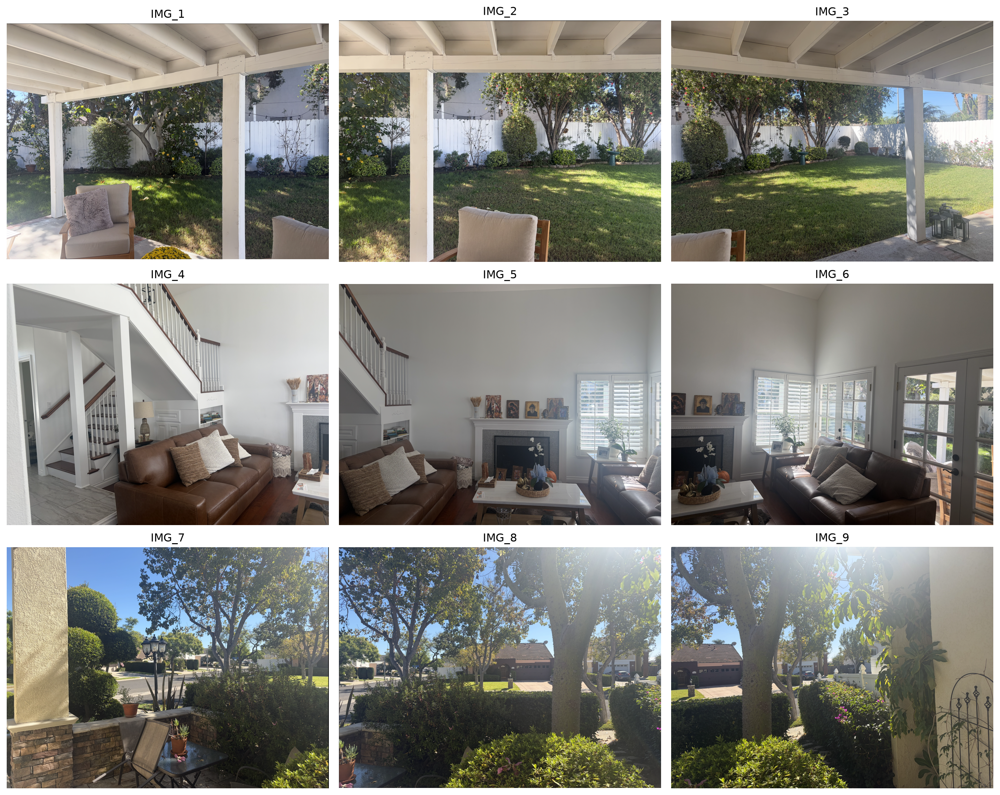
Finding the transformations
After taking the pictures I needed a way to map the same points from one image into another, so I selected points that were visible in both photographs using the previous student's correspondence tool and then set up my own system of equations for the homography, I used the middle image of every set as the reference since it makes the panorama easier to combine later.
Solving for H
A homography is a 3 by 3 matrix and because its scale does not matter we can fix the bottom right element to 1, leaving eight unknowns, each pair of corresponding points gives us two equations and I put these into the matrix A and the vector b then solved using least squares with NumPy.
p' ∼ H p · A h = b · h = np.linalg.lstsq(A, b, rcond=None)[0]For each match (x,y) → (x',y'), the rows in A are [x, y, 1, 0, 0, 0, −xx', −yx'] and [0, 0, 0, x, y, 1, −xy', −yy'] while b contains x' and y'.I originally tried only four points for some of the pairs and even though that gave a solution the warped corners were sometimes extremely distorted, especially on the 4 to 5 pair, so I went back and picked more points across the overlap and the results were much better after that.
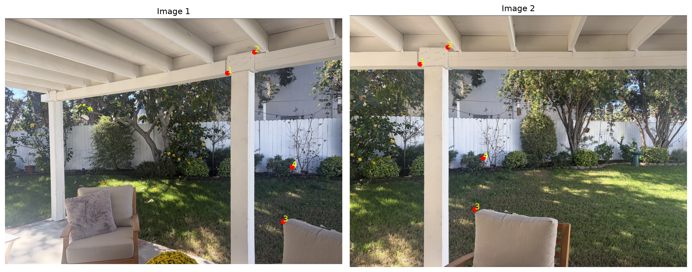
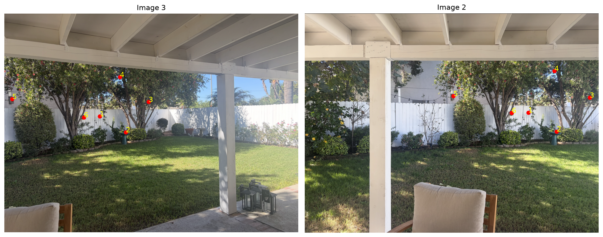
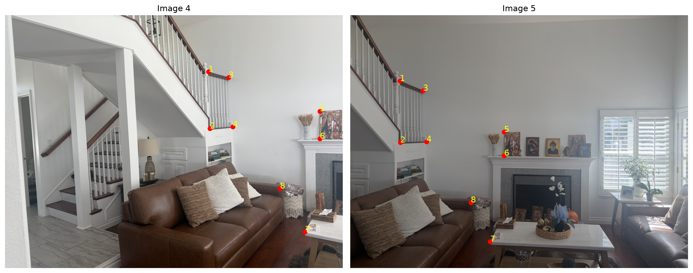
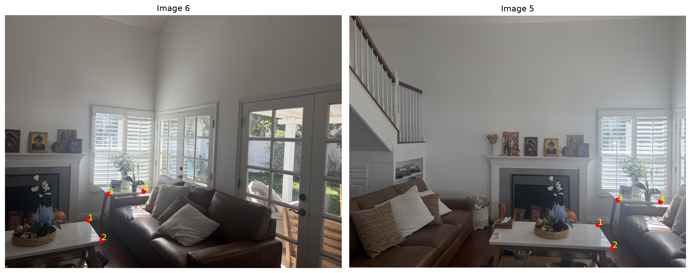
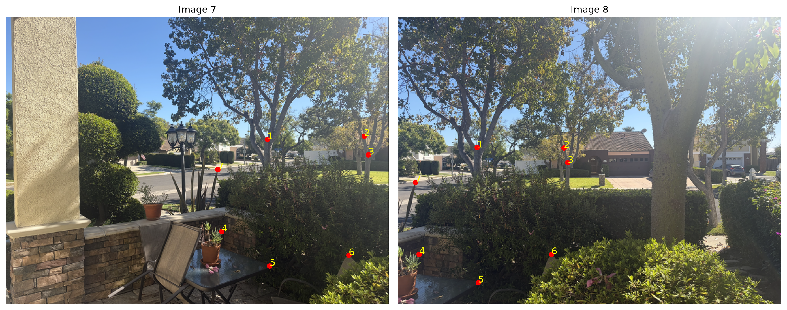
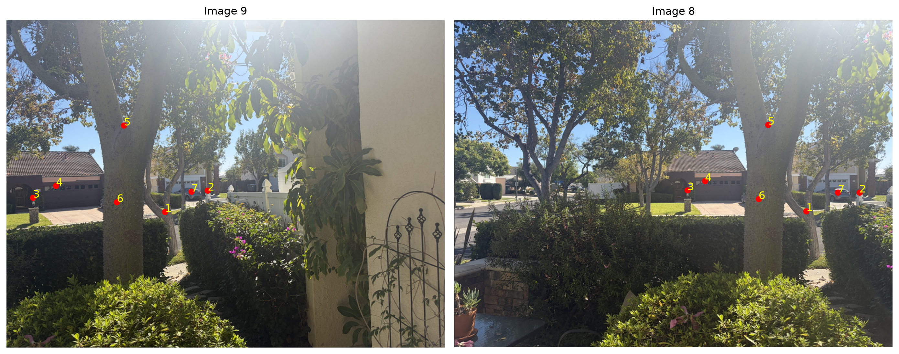
[[ 1.53929, -0.01743, -585.21576], [ 0.24419, 1.32239, -144.26000], [ 0.00067, -0.00004, 1.00000]]
[[ 0.37795, -0.09799, 407.88629], [-0.18326, 0.79967, 37.03982], [-0.00077, -0.00005, 1.00000]]
[[ 2.22417, -0.08429, -850.90973], [ 0.56956, 1.84629, -248.35132], [ 0.00160, -0.00015, 1.00000]]
[[ 0.40147, 0.17130, 384.32842], [-0.27899, 1.03834, 9.93041], [-0.00088, 0.00021, 1.00000]]
[[ 2.83358, -0.06263, -1159.37155], [ 0.70375, 2.30251, -359.00689], [ 0.00235, -0.00016, 1.00000]]
[[ 0.47454, 0.14167, 383.46073], [-0.19378, 0.97109, 25.00643], [-0.00077, 0.00031, 1.00000]]
Inverse warping and interpolation
Once I had the homographies I needed to actually create the warped images, I first transformed the corners of each image using H so I could find the bounds of the output and then for every pixel of that new output I applied the inverse homography to figure out where it should sample the color in the original image.
Nearest neighbor vs bilinear
I implemented both methods myself, for nearest neighbor I rounded the source coordinates and copied the closest pixel which is simple but can look more blocky, for bilinear I used the four surrounding pixels and multiplied each color by its fractional distance weight so the result is smoother although it takes more work per pixel.
source ∼ H⁻¹ [x, y, 1]ᵀNearest neighbor rounds (x, y), bilinear uses floor(x), floor(y), and the fractional parts dx and dy to average the four surrounding colors.Nearest neighbor needs only one source pixel per output pixel so it is the cheaper method, bilinear needs four pixels and a weighted sum which costs more but generally gives less jagged edges, and in my implementation both methods also spend time in the Python loops because I am processing each output pixel separately.
Image 1 → Image 2
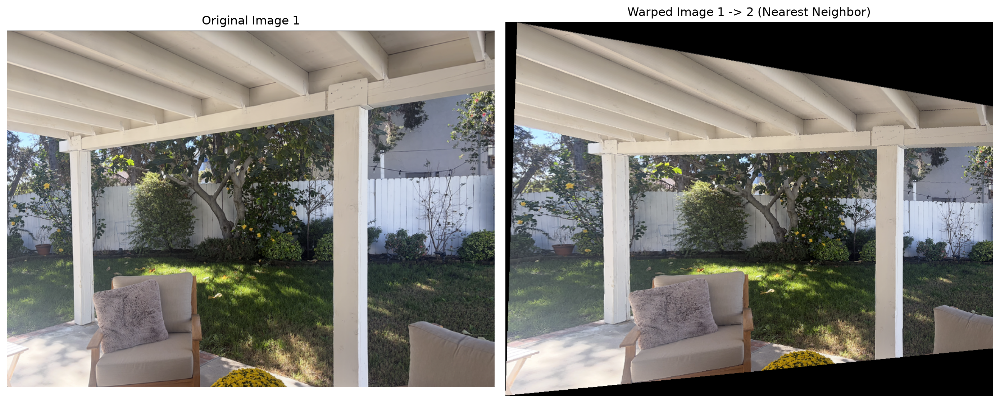
Image 3 → Image 2
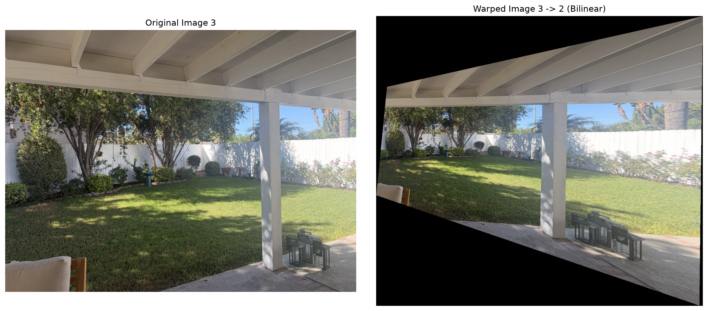
Image 4 → Image 5
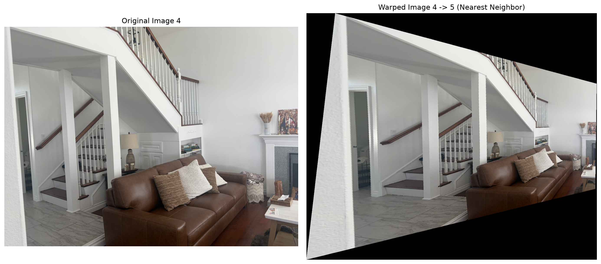
Image 6 → Image 5
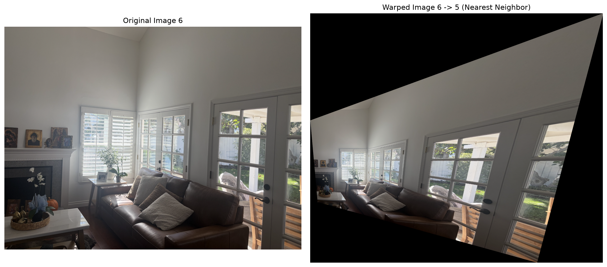
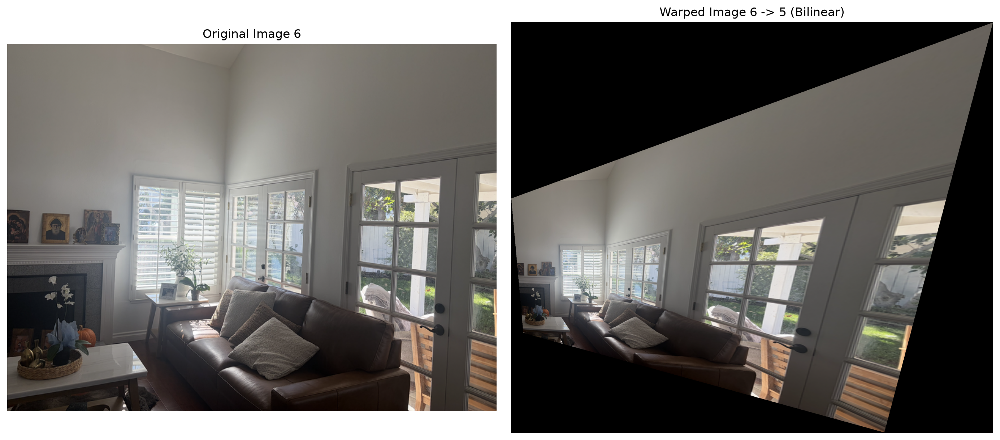
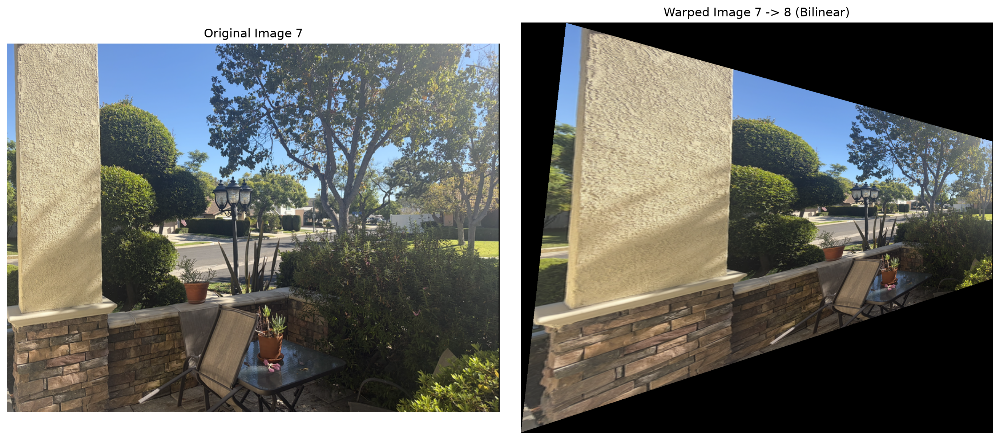
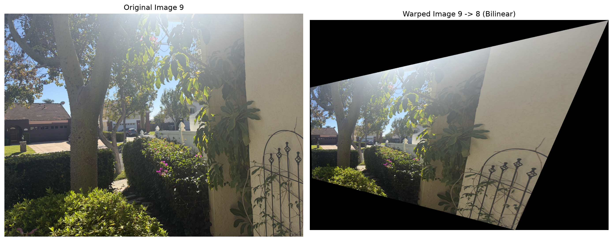
Part A.3 also asks for at least two examples of taking a rectangular object photographed at an angle and correcting it using a homography, these are separate from the panorama warps above and I still need to add their before and after images here.
Building the panoramas
For the last part I wanted to put all three photographs from each set into the same image, I left the middle one unchanged and mapped the other two into its coordinate system, then I calculated one big bounding box using the transformed corners of all three images so the final output would have enough room for everything.
Weighted averaging
At first I just copied each pixel into the output but the problem was that the next image would overwrite the previous one wherever they overlapped, so instead I made one array to add the weighted RGB colors and a second array to store the sum of weights, the weight I used was one plus the minimum distance from the sampled pixel to any of the four edges of its original image.
w = 1 + min(x, W − 1 − x, y, H − 1 − y)For overlapping pixels the final RGB value is sum(wᵢ · Iᵢ) / sum(wᵢ), so pixels farther from an image edge contribute more.This lets the pixels near the interior of each photograph have more influence while the ones near the edges contribute less, it also means I only divide by the weight sum when at least one image actually covers the output pixel, so the rest of the canvas stays empty instead of accidentally treating a black pixel as missing data.
Images 1, 2 and 3
I used image 2 as the reference for this panorama and transformed images 1 and 3 into the same coordinates, then I used the distance to the edges of each original image as the weight when multiple pictures were covering the same output pixel, so instead of overwriting one photograph with the next one they contribute to the final result together.
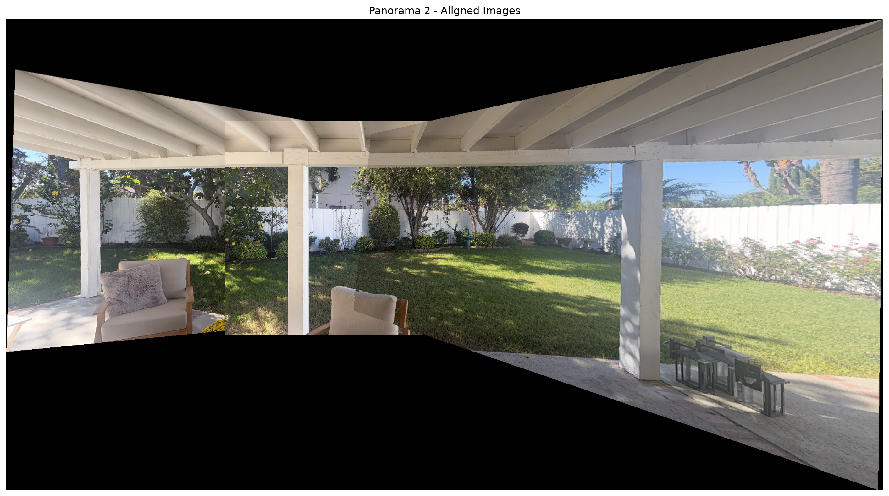
Images 4, 5 and 6
I used image 5 as the reference for this panorama and transformed images 4 and 6 into the same coordinates, then I used the distance to the edges of each original image as the weight when multiple pictures were covering the same output pixel, so instead of overwriting one photograph with the next one they contribute to the final result together.
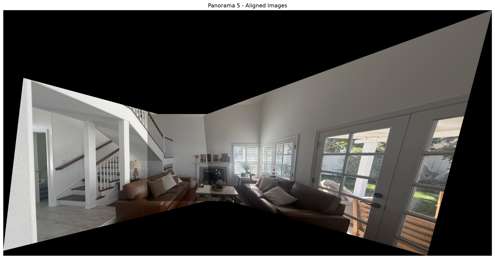
Images 7, 8 and 9
I used image 8 as the reference for this panorama and transformed images 7 and 9 into the same coordinates, then I used the distance to the edges of each original image as the weight when multiple pictures were covering the same output pixel, so instead of overwriting one photograph with the next one they contribute to the final result together.
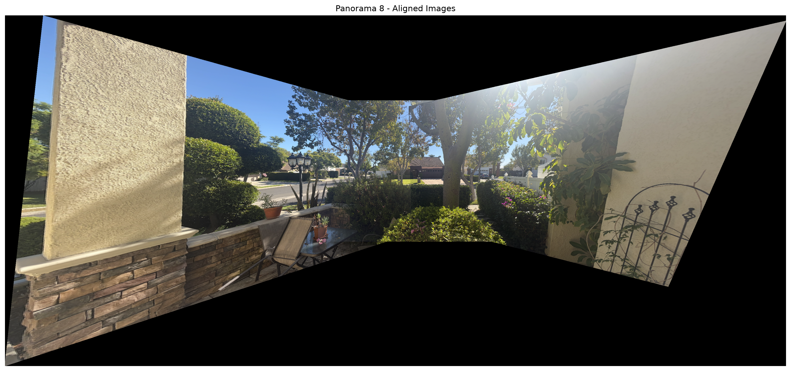